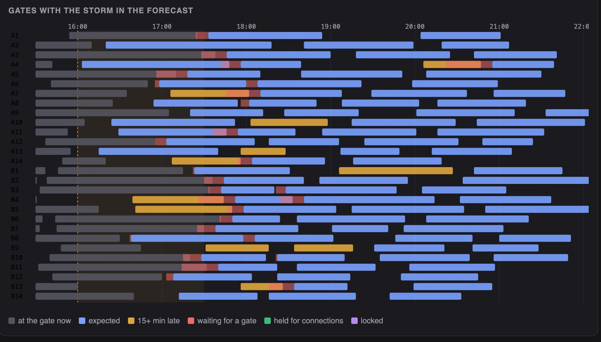
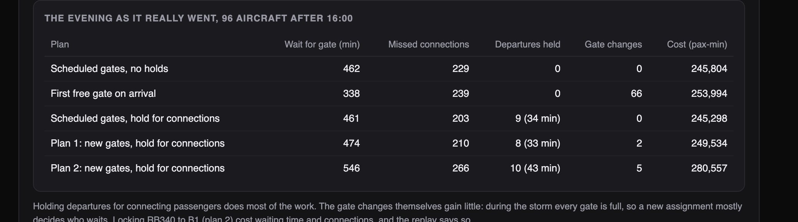

Python · Simulation · Airport operations · 2026-10
A Storm Is Closing a Runway. Who Misses Their Flight?
An operations system for a simulated hub airport: it predicts how late each aircraft will be, which connections are at risk, and proposes gates and departure holds a manager approves. Replayed against what really happened, holding departures saved 26 of 229 missed connections; re-assigning gates saved none, and the project says why.
Built from a written blueprint as one vertical slice. The airport is simulated: its timetable, passengers and the day's delays come from a generator I wrote, which is what lets the evening be replayed against the truth. Passenger-minute prices are my assumptions. No language model is used. Not built: real flight feeds, ground crews and turnaround tasks, baggage, a live clock, Kafka, Terraform, single sign-on.
01 — The problem
At a hub airport a thunderstorm does two things at once: fewer aircraft can land, and the ones at the gates cannot push back, so arrivals find every gate full. Connecting passengers miss their onward flights. Operations centres see this on a dozen screens and react aircraft by aircraft. Can software predict the delays, say which passengers are at risk, and propose what to do in time for someone to approve it?
Blueprint 1 of fifteen in a third build book, built as its demo scenario end to end.
02 — What I built
A Python service on PostgreSQL with a background worker and a web page, started by one docker compose up.
- A simulator of an airport day: 28 gates, 292 aircraft turns, 14,371 connecting passengers, a runway queue and metered pushbacks in a storm.
- A delay model that predicts each arrival with a 10–90% band, tested on days it never saw.
- Connection risk for every onward flight, with a chance that is checked for honesty.
- A gate optimiser that scores every candidate plan on six sampled futures, and a rule for holding departures.
- Approval: a plan is a proposal until a manager publishes it; stale proposals are refused.
03 — How it was built
- 01
Predict the delay from what is known
At 16:00 some aircraft have left their origin late, some have not left at all, and a storm forecast says landings will be cut to 18 an hour. The model sees each flight the way the operations centre does: the origin delay if it is known, where its expected landing falls in the storm, and how many aircraft are expected ahead of it in the queue. It is trained on 72 past days of the same timetable and tested on 18 later ones.
known = np.where(d["dep_origin"] <= w["sched_arr"] - world.TAXI - lead, d["origin_delay"], np.nan) - 02
An honest chance of missing a connection
For each connecting group the question is whether the inbound aircraft arrives later than the minutes to spare. The chance comes from how wrong the model's predictions of that size were on the test days, not from a rule of thumb. The evaluation then checks it: groups given a 10 to 30% chance missed 17% of the time; groups given 90% or more missed 87%, so the top end is too sure of itself, and the page says so.
return float(1 - np.searchsorted(res, threshold - pred, side="right") / len(res)) - 03
The optimiser I removed
The blueprint asks for a CP-SAT gate model, and I built one: an interval per aircraft per gate, no overlaps, waiting and gate changes in the objective. On point estimates it found plans in a second that looked 4% better. Replayed against what really happened, they were 2 to 6% worse than doing nothing: a plan packed tightly around estimates that are seven minutes off breaks on contact. I replaced it with a search that scores every candidate on six sampled futures through the same simulator that scores the real day.
cost = lambda p: float(np.mean([score(w, arr, now, p, st, hold)["cost_passenger_min"] for arr, st in scenarios])) - 04
The lever that worked was a different one
With the search in place the result was clear: re-assigning gates in a storm gains almost nothing, because every gate is full and a new plan mostly decides who waits. Even perfect knowledge of arrival times gains little. What saves connections is holding a departure a few minutes for passengers whose aircraft is already at a gate, when the passengers saved outweigh the delay to everyone on board. The hold rule runs inside the simulator, decided when each departure is ready.
options.append((MISS_MIN * saved - int(w["pax"][i]) * wait, int(wait))) - 05
Nothing changes until a manager approves
The optimiser writes a proposal with its expected effect and every gate change listed. The controller who asked for it cannot publish it. A manager can, unless another plan was published after this one was computed, in which case it is refused as stale. In the demo a wide-body is locked to gate B1 and the plan is redone around it; the replay then shows what that lock cost.
raise Problem(409, "stale_plan", "another plan was published after this one was computed; optimise again")
04 — Results
The demo. The storm takes aircraft expected to wait for a gate from 6 to 28 and expected missed connections from 222 to 278.

Replayed against the simulator's hidden version of the evening, with the storm running 25 minutes past its forecast:

On nine storm evenings at three other simulated airports:
| System | Simple | |
|---|---|---|
| Delay error | 4.2 min | 4.5 min |
| In a storm queue | 4.3–5.0 | 5.1–5.8 |
| Missed, with holds | 2,148 | 2,796 |
| With new gates too | 2,212 | 2,168* |
| Cost, new gates | −4.3% | −6.9%* |
"Simple" is the departures board for delays (the delay the aircraft left its origin with) and the scheduled gates for connections. Starred entries are perfect knowledge of the arrival times, which nothing could have. Delay figures are for two of the three airports; on the third the model was worse than the board (4.9 against 4.7 minutes) and I could not find out why.
Honest limits. The gate optimiser lowers the passenger-minute cost it is given but not the missed connections. The chance of a missed connection is too sure of itself above 90%. The storm forecast is an input the system trusts and cannot check. All of it is measured on a simulator whose delays have only two causes, the origin and the runway.
Checks. 17 tests, including: no gate ever holds two aircraft at once, a wide-body is refused a small gate, an older flight update never overwrites a newer one, a controller cannot publish a plan, a stale proposal is refused, and one airport cannot see another's operations.
05 — What I'd do next
- A live clock: events moving time forward, estimates recomputed per event, plans redone as the picture changes.
- Remote stands and towing, the real levers when gates are full.
- A fallback to the departures board when the model's recent error is worse than the board's.